8. Class and UML diagrams#
This document shows the system-level UML. Each service's own docs/design.md repeats its part with more detail: fields,
adapters and tests.
8.1 Component diagram#

[[Name]] marks an outbound port (interface); [(Name)] marks a repository port.
8.2 Domain primitives (copied into each service that needs them)#

8.3 Order context (order-service)#

Application layer and ports#

ReservationResult and PaymentResult are sealed interfaces. The saga handles each outcome in an exhaustive switch, so a new
outcome cannot be forgotten: the compiler rejects the code.
8.4 Inventory context (inventory-service)#

8.5 Payment context (payment-service)#

8.6 Catalogue, cart, search and review contexts#

8.7 Outbox and idempotent consumer (each service's own copy)#

8.8 Package diagram (every Java service)#

ArchUnit rules enforced in every Java service:
domaindepends on nothing outsidejava.*and itself.applicationdepends only ondomain(andjava.*).- Adapters do not depend on each other.
- Only
configmay reference Spring configuration annotations.
8.9 Deployment (UML deployment view)#
